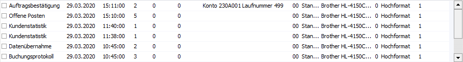

In den nachfolgenden Kapiteln wird die grundsätzliche
Bedienung von WinLine Tabellen näher erläutert. Solche Tabellen unterteilen sich
dabei die folgenden Bereiche:
ü Tabellenkopf
Im Tabellenkopf werden die
Bezeichnungen der einzelnen Spalten anzeigt. Die Anordnung bzw. die Größe der
Spalten kann individuell eingestellt werden (bestimmte Tabellen sind von dieser
Funktion ausgenommen).
ü Tabellenmitte

ü Tabellenfuß
Im Fuß der Tabelle wird ein
horizontaler Scrollbalken dargestellt, wenn die Breite der Tabelle den
sichtbaren Bereich übersteigt. Zusätzlich werden des Öfteren Tabellenbuttons zur
Auswahl angeboten.